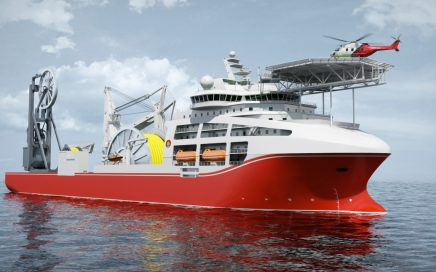

-
我的第一份工作
2014年4月初，经专业老师推荐我跟同学有幸去上海佳豪船舶工程设计股份有限公司实习。
在公司工作的两年里，取得一些的成绩，同时也得到公司的认可。通过这三年的工作我学到了很多知识，其中我自认为学到最重要的一点，敢于接受不同的挑战，因为在船舶设计中，一艏船设计分好多区域，例如首部，尾部，机舱，货舱设计，一般设计都是一个人负责一个区域，而我们当时经验不足，一直跟着老师傅做，打打下手，帮出出图。当做了一段时间后，领导给你一个独立区域自己负责时，心里不免犯嘀咕，感觉自己不能胜任，但是当你下定决心接下来时，你就会给自己一种无形的动力，促使自己去承担责任，遇到不会的会积极跟领导沟通，请教同事。最后出色完成任务。当你第一次挑战成功后，后面遇到的更多挑战就更有信心了，就会养成一种遇事不退缩的良好习惯。同时还培养了我坚韧不拔的意志和顽强拼搏的精神，使我能够在工作中不断地克服困难。
-
我的大学生活


在这个阴雨濛濛的秋季，我又上学了。不过这回是离开那个曾经承载过我的快乐和忧伤的高中，搭上去武汉的列车－－然后上大学。
大学生活是漫漫人生路的一个阶段，也是人生之歌的一个乐章。这段路即使短暂的，也是漫长的，这个乐章既可能是优美动听的，也可能是遗憾苦涩的。虽然，我的大学生活才刚刚开始，但我相信它会是充满快乐的。